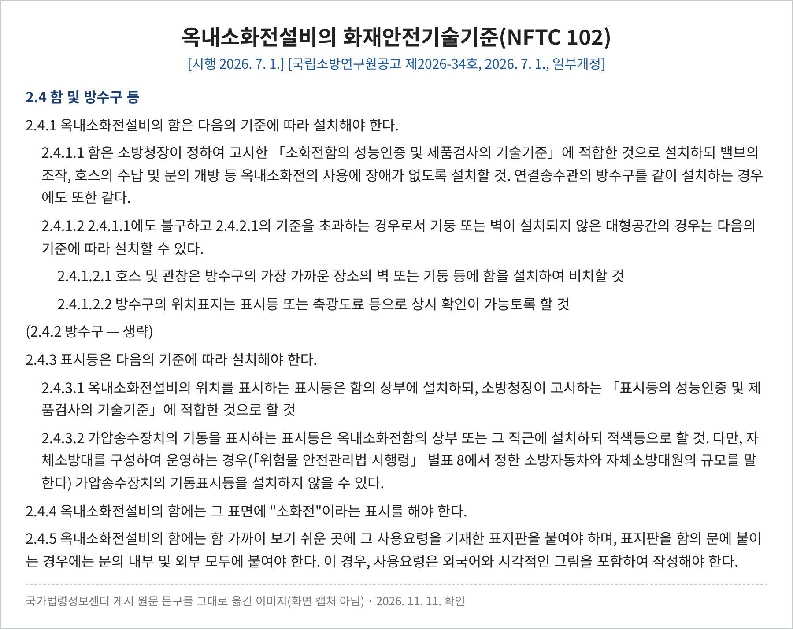
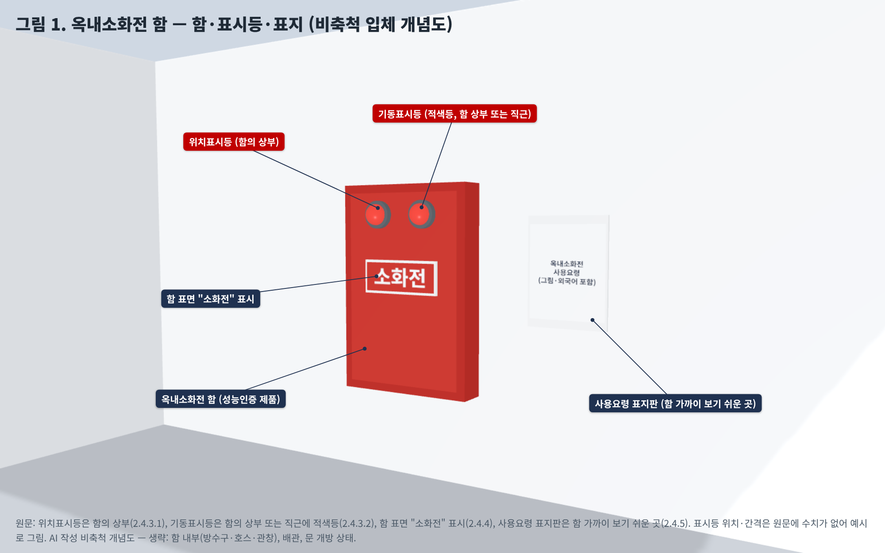
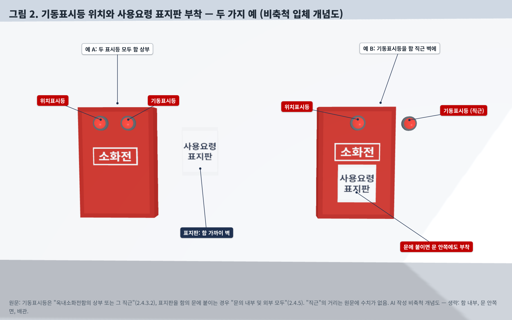

옥내소화전 함과 표시등, 어디에 무엇을 달아야 할까요? — NFTC 102 2.4 정리
왜? 화재 때 처음 보는 사람도 소화전을 찾아 바로 쓸 수 있게 하고, 펌프가 기동했는지 현장에서 알 수 있게 하려는 기준입니다.
1. 공식 기준 원문 (NFTC 102, 현행)
2.4.1 옥내소화전설비의 함은 다음의 기준에 따라 설치해야 한다.
2.4.1.1 함은 소방청장이 정하여 고시한 「소화전함의 성능인증 및 제품검사의 기술기준」에 적합한 것으로 설치하되 밸브의 조작, 호스의 수납 및 문의 개방 등 옥내소화전의 사용에 장애가 없도록 설치할 것. 연결송수관의 방수구를 같이 설치하는 경우에도 또한 같다.
2.4.1.2 2.4.1.1에도 불구하고 2.4.2.1의 기준을 초과하는 경우로서 기둥 또는 벽이 설치되지 않은 대형공간의 경우는 다음의 기준에 따라 설치할 수 있다.
2.4.1.2.1 호스 및 관창은 방수구의 가장 가까운 장소의 벽 또는 기둥 등에 함을 설치하여 비치할 것
2.4.1.2.2 방수구의 위치표지는 표시등 또는 축광도료 등으로 상시 확인이 가능토록 할 것
2.4.3 표시등은 다음의 기준에 따라 설치해야 한다.
2.4.3.1 옥내소화전설비의 위치를 표시하는 표시등은 함의 상부에 설치하되, 소방청장이 고시하는 「표시등의 성능인증 및 제품검사의 기술기준」에 적합한 것으로 할 것
2.4.3.2 가압송수장치의 기동을 표시하는 표시등은 옥내소화전함의 상부 또는 그 직근에 설치하되 적색등으로 할 것. 다만, 자체소방대를 구성하여 운영하는 경우(「위험물 안전관리법 시행령」 별표 8에서 정한 소방자동차와 자체소방대원의 규모를 말한다) 가압송수장치의 기동표시등을 설치하지 않을 수 있다.
2.4.4 옥내소화전설비의 함에는 그 표면에 "소화전"이라는 표시를 해야 한다.
2.4.5 옥내소화전설비의 함에는 함 가까이 보기 쉬운 곳에 그 사용요령을 기재한 표지판을 붙여야 하며, 표지판을 함의 문에 붙이는 경우에는 문의 내부 및 외부 모두에 붙여야 한다. 이 경우, 사용요령은 외국어와 시각적인 그림을 포함하여 작성해야 한다.
성능기준인 「옥내소화전설비의 화재안전성능기준(NFPC 102)」(소방청고시 제2025-25호, 2026. 3. 1. 시행) 제7조제1항·제3항·제4항·제5항에도 함, 위치표시등과 기동표시등 설치, "소화전" 표시, 사용요령 표지판이 같은 취지로 실려 있습니다. 방수구(2.4.2: 층마다, 수평거리 25 m 이하, 높이 1.5 m 이하, 호스 구경)는 다른 글에서 따로 다룹니다.
원문 이미지

2. 적용 조건
① 함은 '제품'과 '설치 상태'를 함께 봅니다. 함 자체는 「소화전함의 성능인증 및 제품검사의 기술기준」에 맞는 제품이어야 하고, 설치 후에는 밸브 조작·호스 수납·문 개방에 장애가 없어야 합니다. 연결송수관 방수구를 같은 함에 넣어도 마찬가지입니다.
② 대형공간 특례(2.4.1.2)는 조건이 둘입니다. 방수구 수평거리 기준(2.4.2.1)을 초과하는 경우이면서, 기둥이나 벽이 없는 대형공간일 것. 이때는 호스·관창을 방수구에서 가장 가까운 벽·기둥 등의 함에 비치하고, 방수구 위치는 표시등이나 축광도료 등으로 상시 확인되게 합니다.
③ 표시등은 두 가지입니다. 위치표시등(함의 상부, 표시등 성능인증 제품)과 기동표시등(함 상부 또는 그 직근, 적색등). 기동표시등은 원문이 정한 자체소방대(「위험물안전관리법 시행령」 별표 8 규모)를 운영하는 경우에만 생략할 수 있습니다.
④ 표시와 표지판. 함 표면에 "소화전" 표시. 사용요령 표지판은 함 가까이 보기 쉬운 곳에 붙이고, 문에 붙이면 문 안쪽·바깥쪽 모두에 붙입니다. 사용요령에는 외국어와 시각적인 그림이 들어가야 합니다.
3. 그림으로 보기


그림은 모두 AI(Claude)로 그린 비축척 개념도입니다. 함 크기, 표시등 크기·간격·위치표시등 색, 표지판 크기는 원문에 수치가 없어 예시로 그렸습니다. 함 내부(방수구·호스·관창), 배관, 문 안쪽 면은 생략했습니다. 설치 적합 판정용 도면이 아닙니다.
판단 기준점 주의: 원문은 기동표시등 위치를 "상부 또는 그 직근"이라고만 쓰고 직근의 거리를 정하지 않습니다. 위치표시등 색·밝기 등 성능은 「표시등의 성능인증 및 제품검사의 기술기준」에 따르며, 이 글에서는 그 기준 원문을 확인하지 않았습니다. 해석이 갈리는 현장은 관할 소방서에 먼저 확인하세요.
4. 단계별 확인사항
| 단계 | 확인할 것 |
|---|---|
| 설계 | 함 위치를 문 개방·호스 인출 공간이 확보되는 곳에 배치. 대형공간 특례 적용 시 2.4.2.1 초과 근거와 '기둥·벽 없음' 조건을 도면에 표기. 자체소방대로 기동표시등을 생략한다면 별표 8 규모 근거를 남김 |
| 시공 | 함·표시등의 성능인증 제품 여부. 위치표시등은 함 상부, 기동표시등은 함 상부 또는 직근에 적색등. 함 표면 "소화전" 표시 |
| 감리 | 문 개방·밸브 조작·호스 수납에 장애가 없는지 실제로 열어 보고 확인(가구·마감재 간섭). 사용요령 표지판의 외국어·그림 포함 여부, 문 부착 시 안·밖 모두 부착 |
| 유지관리·점검 | 위치표시등 점등, 펌프 기동 시 기동표시등 점등 여부. 함 앞 적치물·잠금으로 문 개방 장애가 생기지 않았는지. 표지판 훼손·탈락 |
5. 적용 시점과 경과조치
현행본: 국립소방연구원공고 제2026-34호(2026. 7. 1. 시행). 국가법령정보센터 연혁에는 이 판본과 제정본(소방청공고 제2022-209호, 2022. 12. 1. 시행) 두 판본만 있습니다.
연혁 대조: 두 판본의 2.4(2.4.1~2.4.5) 본문을 국가법령정보센터에서 대조한 결과 문구가 같습니다. 즉 이 글의 내용은 2022. 12. 1. 이후 바뀌지 않았습니다. NFTC 102 이전의 「옥내소화전설비의 화재안전기준(NFSC 102)」 시절 문구는 이번에 대조하지 않았습니다(확인하지 못함).
공식 원문 링크
· 옥내소화전설비의 화재안전기술기준(NFTC 102) 현행 — 국립소방연구원공고 제2026-34호
· NFTC 102 제정본 — 소방청공고 제2022-209호(2022. 12. 1. 시행)
· 옥내소화전설비의 화재안전성능기준(NFPC 102) 현행 — 제7조(함 및 방수구 등)
2026. 11. 11. 국가법령정보센터 원문 기준으로 작성했습니다. 기준은 개정될 수 있으니 적용 시점의 원문을 확인하세요.